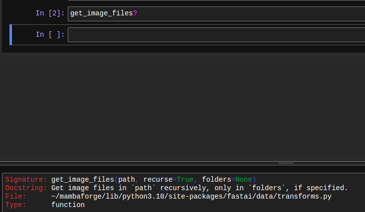
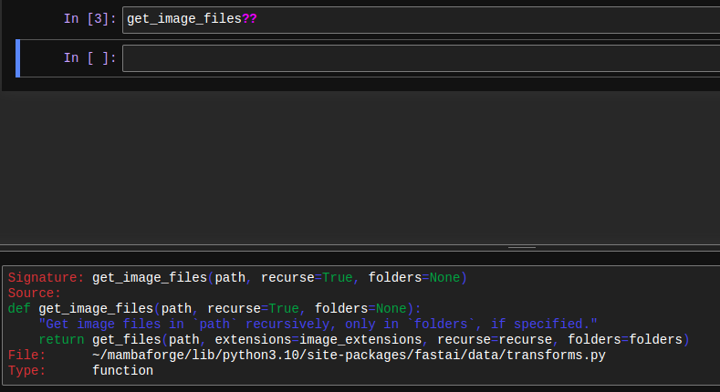
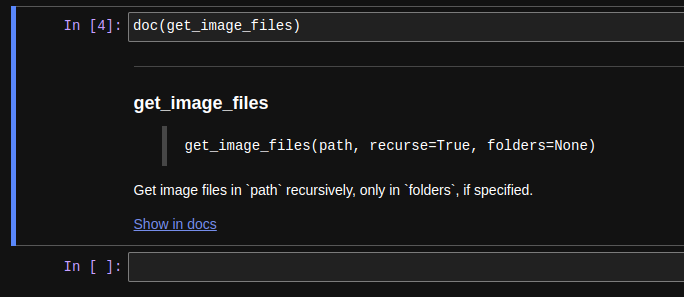
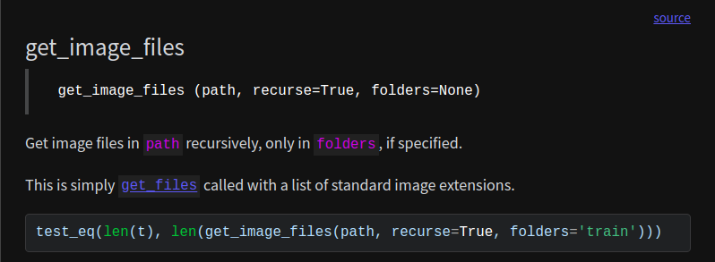
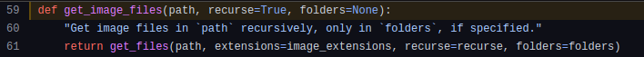

def test(n):
for i in range(n):
print(i)Live coding 4
Live coding 4
In this blog, I will cover tips on Jupyter notebook and python debugger.
In the Youtube video, Jeremy goes over how to setup paperspace again. However, I covered it in the last article. So, I decided to talk about something I haven’t covered yet.
Jupyter notebook
Jupyter notebook is a great tool to work with because we can have code and notes at the same place. This way, we can explore ideas, take notes, and program at the same time. We can also add videos or diagrams in here as well. However, it’s not just for playing around. It can also be used for writing a book or a library with nbdev.
So, let’s get started. Cells can be executed with either Ctrl-Enter or Shift-Enter. Shift-Enter moves onto the next cell whereas Ctrl-Enter stays on the executed cell. Auto-complete works with tab key in code. If we want to find out what a function does, first, we can write a function name. Then, move the cursor between the parenthesis and press Shift-tab. Information about the function pops up something like this:

Shift-Tab for a functionThis way, we can easily read the docstring and find out what type of parameters the function takes. You can also do Shift-tab twice. Find out what you get.
Another way to check the documentation string is using ? before or after the function name. We get a nice modal from the bottom.

? for docstringWhat if we want to look at the source code? We do not have to go anywhere else. We can check it out right here with ??.

?? for source codeAnother way to get help with the function is looking at the documentation. Again, we can look at the documentation right here with doc. It requires nbdev, which can be installed using mamba install -c fastai nbdev. This is not the full documentation. We can click on the Show in docs link to go to the documentation page.

doc for documentation
Note
doc only works on fastai things. For python built-in functions, it won’t provide useful output. However, it is still possible to ? or ??.
This is the documentation page. There are examples and tests here as well. It provides the most in depth information. It also provides a link to a source code.

When source link is clicked, source code on GitHub is provided.

As we have seen, it is very easy to get help on Jupyter notebook. Also, there are many keyboard shortcuts available under Help tab. To find out more, press h in command mode or click on Help tab and click keyboard shortcuts. These can also be editted.
Python debugger
Python debugger is a powerful tool to use with many methods and features built in. However, this can be too daunting for some newcomers. So, let’s go over simple ones here to get it started.
First, we define a simple function, test, which prints numbers from 0 to n - 1.
test(10)0
1
2
3
4
5
6
7
8
9With %%debug in the beginning of the cell, we can start a debugging session. We will get a prompt at the end of the cell. We can quit with q (quit). It is also possible to write quit. On the pdb documentation, the command is written as q(uit). This means either q or quit works fine.
test(3)NOTE: Enter 'c' at the ipdb> prompt to continue execution.
> <string>(2)<module>()
ipdb> qAnother thing we can do is get help with h (help). When executed by itself, h returns all the commands, and when another command is given as an agrument, it returns documentation for that command.
test(3)NOTE: Enter 'c' at the ipdb> prompt to continue execution.
> <string>(2)<module>()
ipdb> h
Documented commands (type help <topic>):
========================================
EOF commands enable ll pp s until
a condition exit longlist psource skip_hidden up
alias cont h n q skip_predicates w
args context help next quit source whatis
b continue ignore p r step where
break d interact pdef restart tbreak
bt debug j pdoc return u
c disable jump pfile retval unalias
cl display l pinfo run undisplay
clear down list pinfo2 rv unt
Miscellaneous help topics:
==========================
exec pdb
ipdb> h s
s(tep)
Execute the current line, stop at the first possible occasion
(either in a function that is called or in the current
function).
ipdb> qs steps into the function and n goes into the next line. After stepping into the function, we can look at the variables with p. Here, we can use p i to find out the value of i. It can be cumbersome to keep entering the same command over and over, such as n, so we can just press Enter without any command to execute the previous command.
test(3)NOTE: Enter 'c' at the ipdb> prompt to continue execution.
> <string>(2)<module>()
ipdb> s
--Call--
> /tmp/ipykernel_23823/3072799742.py(1)test()
----> 1 def test(n):
2 for i in range(n):
3 print(i)
ipdb> s
> /tmp/ipykernel_23823/3072799742.py(2)test()
1 def test(n):
----> 2 for i in range(n):
3 print(i)
ipdb> s
> /tmp/ipykernel_23823/3072799742.py(3)test()
1 def test(n):
2 for i in range(n):
----> 3 print(i)
ipdb> p i
0
ipdb> n
0
> /tmp/ipykernel_23823/3072799742.py(2)test()
1 def test(n):
----> 2 for i in range(n):
3 print(i)
ipdb> p i
0
ipdb> n
> /tmp/ipykernel_23823/3072799742.py(3)test()
1 def test(n):
2 for i in range(n):
----> 3 print(i)
ipdb> p i
1
ipdb> n
1
> /tmp/ipykernel_23823/3072799742.py(2)test()
1 def test(n):
----> 2 for i in range(n):
3 print(i)
ipdb>
> /tmp/ipykernel_23823/3072799742.py(3)test()
1 def test(n):
2 for i in range(n):
----> 3 print(i)
ipdb>
2
> /tmp/ipykernel_23823/3072799742.py(2)test()
1 def test(n):
----> 2 for i in range(n):
3 print(i)
ipdb>
--Return--
None
> /tmp/ipykernel_23823/3072799742.py(2)test()
1 def test(n):
----> 2 for i in range(n):
3 print(i)
ipdb>
--Return--
None
> <string>(2)<module>()
ipdb> p i
*** NameError: name 'i' is not defined
ipdb> qWhen we are out of the function, i is not defined.
If we want to find out where the error occured, we can use w. In this case, we used %%debug to get in the debugger.
l lists the source code in the file. This can be helpful to give us where we are.
test(3)NOTE: Enter 'c' at the ipdb> prompt to continue execution.
None
> <string>(2)<module>()
ipdb> s
--Call--
> /tmp/ipykernel_23823/3072799742.py(1)test()
----> 1 def test(n):
2 for i in range(n):
3 print(i)
ipdb> l
----> 1 def test(n):
2 for i in range(n):
3 print(i)
ipdb> w
/home/kappa/mambaforge/lib/python3.10/bdb.py(597)run()
595 sys.settrace(self.trace_dispatch)
596 try:
--> 597 exec(cmd, globals, locals)
598 except BdbQuit:
599 pass
None
<string>(2)<module>()
> /tmp/ipykernel_23823/3072799742.py(1)test()
----> 1 def test(n):
2 for i in range(n):
3 print(i)
ipdb> qAnother way to get into the debugger is by having an error within the program. Here, I divide a number by 0, and it throws an ZeroDivisionError.
def test2():
return 1 / 0test2()ZeroDivisionError: division by zeroI can type %debug (Single %) in the cell, and get into the debugger now to find out what just caused an error.
> /tmp/ipykernel_23823/2873590661.py(2)test2()
1 def test2():
----> 2 return 1 / 0
ipdb> w
None
/tmp/ipykernel_23823/2251835413.py(1)<module>()
----> 1 test2()
> /tmp/ipykernel_23823/2873590661.py(2)test2()
1 def test2():
----> 2 return 1 / 0
ipdb> l
1 def test2():
----> 2 return 1 / 0
ipdb> qI can find out where the error occured with w and print the source code with l.
That’s it for python debugger. However, there are more commands listed in the documentation.
Here is a list of commands we covered:
n: next.s: step into.p: print variable.Enter: execute last command.l: list the source code in a file.w: where did the error occur?q: quit
Conclusion
We covered tips on Jupyter notebook and python debugger. These tools have a learning curve, so it is a great idea to take time and learn them thoroughly. After a while, programming without them will get difficult. Also, check out these products made with Jupyter notebook: fastbook, fastai, and nbdev.